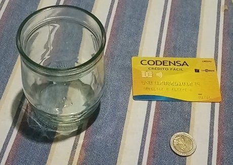
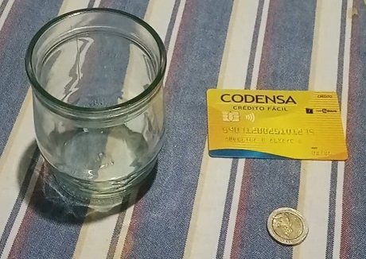
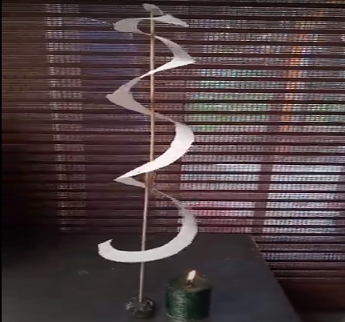
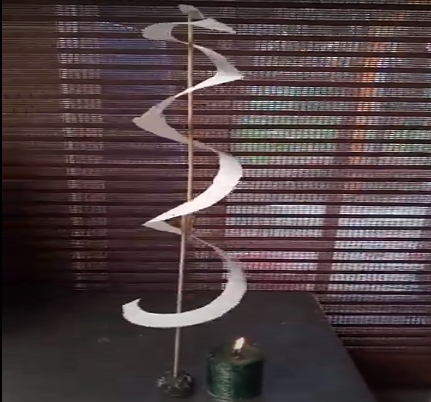

Portada

Bitácora de procesos desarrollados en la competencia
GA3-220201501-AA4-EV02
Aprendiz
ANGÉLICA MARÍA ALZATE GONZALEZ
Tutora
SONIA YAMILE ORTEGA CARRILLO
SENA
CENTRO TEXTIL Y DE GESTION INDUSTRIAL
REGIONAL ANTIOQUIA
2023
Objetivos
1. Interpretar y explicar
Las diferentes clases de medidas, gráficas y ecuaciones que describen los cambios físicos recurrentes en los cuerpos según las teorías, leyes y principios.
2. Referenciar
Mediante experimentos reales la aplicación de las leyes de la Termodinámica, la transformación de la energía y las leyes de Newton.
3. Desarrollar
La bitácora de todos los procesos y experimentos llevados a cabo durante el desarrollo de las evidencias.
Introducción
Esta evidencia se centra en interpretar y explicar de manera clara las diferentes clases de medidas, gráficas y ecuaciones que describen los cambios físicos recurrentes en los cuerpos según las teorías, leyes y principios. Para su desarrollo es importante la lectura y análisis del componente formativo “La ciencia de las cosas”. Con ello, se espera evidenciar la importancia del conocimiento de las Ciencias Naturales y sus aportes aplicados al contexto productivo y social.
Evidencias
1. Leyes de Newton: Experimento Ley de Inercia
2. Conservación de la energía, Termodinámica, Electromagnetismo, Ondas y Oscilaciones.
3. Informe Laboratorio
Galeria


 

 

Videos
Conclusiones
- En las evidencias del módulo de Física aprendimos sobre su importancia en todos los procesos de la naturaleza, sus propiedades y variables.
- Los avances tecnológicos desarrollados a través de la física han ayudado a los seres humanos han contribuido al desarrollo y progreso de la humanidad.
- Encontramos un campo muy extenso en la Física para la investigación y cada uno de sus componentes es de suma importancia, por tanto es necesario apropiar las formulas matemáticas dependiendo de la necesidad requerida para poder aplicarlas correctamente y hallar las respuestas a los diferentes problemas planteados.
- La ciencia es el conjunto de conocimientos adquiridos a lo largo de la actividad humana, que busca dar respuesta a través de estudios a preguntas aún sin resolver, acerca de la naturaleza. Apoyada en expresiones y modelos matemáticos que permiten verificar o negar hipótesis con la experimentación. Esta se divide en las ciencias de la vida y las ciencias físicas.